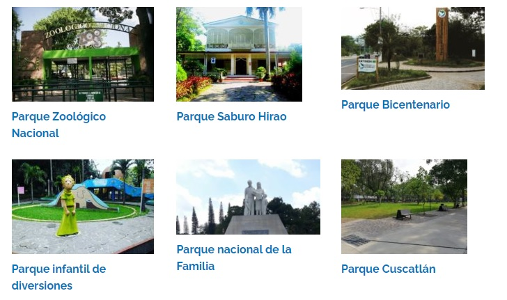

Los parques recreativos de El Salvador son lugares donde la naturaleza se hace presente en medio de las ciudades, y al mismo tiempo otras atracciones como juegos infantiles para los más pequeños, senderos para caminar, lugares de sano esparcimiento para la familia y otras actividades al aire libre.
También son reservas ecológicas en las cuales se puede encontrar abundante vegetación y que son como pulmones ecológicos para las ciudades, ya que en ellos se puede respirar un ambiente de tranquilidad..
-
Parque Saburo Hirao
-
Parque Cuscatlán

Uno de los principales espacios que no te puedes perder si visitas el parque Saburo Hirao se trata de su museo. En él, podrás pasear por sus tres grandes salas de exposición: la de biología, la de paleontología y la de geología

Este se trata de un punto recreativo de interés para muchos salvadoreños. Después de todo, dentro de él es posible ubicar una variedad de localidades y monumentos de interés turístico.

Desde su inauguración el primero de marzo de 1939 este parque ha estado abierto para el uso de los salvadoreños. Asimismo, desde su reciente remodelación en el 2018, sus instalaciones han adquirido una nueva vida e interés turístico.